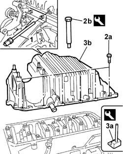
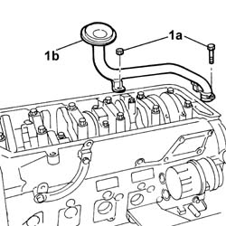
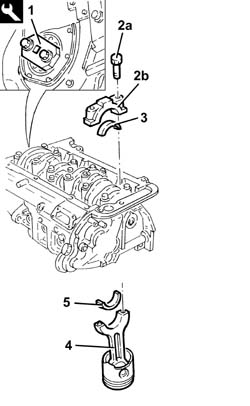
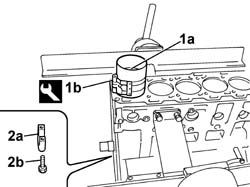
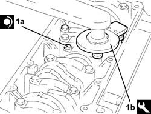

1028H14 PISTON and CONNECTING ROD SET - R.R. with engine and cylinder head(s) removed
- Path
- Procedures > 10 ENGINE > 1028 PISTONS AND CONNECTING RODS > 1028H PISTONS AND CONNECTING RODS > 1028H14 PISTON and CONNECTING ROD SET - R.R. with engine and cylinder head(s) removed
- Kind
- repair procedure (removal / refitting; the operation number is the code)
- Applies to
- engines: 2.4 JTD 20V; all production periods
- Interactive page
- https://sloeber94.github.io/elrnDB-lThss/en/#/850077
Applies to: engines: 2.4 JTD 20V; all production periods
 Removing
Removing
 Refitting
Refitting- Rotate the engine through 180° on the overhaul stand.
1. Undo and remove the engine oil level sensor.
2. Undo the fixing bolts (2a) using the tools (2b).
 | Description | Code | Function |
|---|---|---|---|
2b | Spanner | 1.860.833.001 | Loosen/Tighten front and rear crankcase sump bolts |
| Description | Code | Function |
|---|---|---|---|
2b | Spanner | 1.860.834.001 | Loosen/Tighten crankcase sump side bolts |
3. Cut the sealant bead for the engine oil sump (3b) using the special tool (3a) and remove it.
| Description | Code | Function |
|---|---|---|---|
3a | Blade | 1.870.718.000 | Cut the crankcase sump sealant |

Applies to: engines: 2.4 JTD 20V; all production periods
1. Undo the fixing bolts and the nut (1a) and remove the engine oil intake duct (1b).

Applies to: engines: 2.4 JTD 20V; all production periods
1. Fit the tool and rotate the crankshaft until the cylinder concerned is at B.D.C.
| Description | Code | Function |
|---|---|---|---|
3 | Flange | 1.860.815.000 | Crankshaft rotation |
2. Undo the bolts (2a) and remove the connecting rod cap (2b).
3. Remove the lower connecting rod half-bearing.
4. Remove the connecting rod-piston assembly.
5. Remove the upper connecting rod half-bearing.
- Carry out the same operations to remove the pistons and connecting rods for the remaining cylinders.

Applies to: engines: 2.4 JTD 20V; all production periods
Refitting
Removing- Rotate the crankcase through 90° on the overhaul stand.
- Rotate the crankshaft using the tool fitted previously until the cylinder concerned is at B.D.C.
| Description | Code | Function |
|---|---|---|---|
. | Flange | 1.860.815.000 | Crankshaft rotation |
- The connecting rod half-bearings are selected as described below in [PR1024A10].
1. Fit the piston-connecting rod assembly (1a) complete with half-bearing using the tool (1b).
2. Fit the connecting rod cap (2a) complete with half-bearing and secure it without tightening the bolts (2b).
- Carry out the same operations to refit the pistons and connecting rods for the remaining cylinders.

Applies to: engines: 2.4 JTD 20V; all production periods
- Rotate the crankcase through 90° on the overhaul stand.
1. Tighten the connecting rod cap bolts (1a) to the recommended torque using the angular tightening tool (1b).
 | Value - daNm | Fastening | Component | Ø |
|---|---|---|---|---|
1a | 2.0 + 60° | Bolt | CONNECTING ROD CAPS | M9 |
| Description | Code | Function |
|---|---|---|---|
1b | Torque wrench | 1.860.942.000 | Angular tightening of bearing cap bolts |

Applies to: engines: 2.4 JTD 20V; all production periods
- Remove the tool.
| Description | Code | Function |
|---|---|---|---|
. | Flange | 1.860.815.000 | Crankshaft rotation |
- Fit the engine oil intake complete with O-Ring and secure it using the bolts and the nut.
- Apply the recommended sealant to the entire perimeter of the crankcase sump.
 | Description | Qty. | Component | Type | Classification |
|---|---|---|---|---|---|
. | Dow corning 7091 | - | OIL SUMP | Silicone sealant | - |
- Fit the crankcase sump.
- Tighten the side bolts fixing the crankcase sump to the recommended torque using the tool.
| Value - daNm | Fastening | Component | Ø |
|---|---|---|---|---|
. | (Engine crankcase side) 0.9 - 1.2 | Side bolts | OIL SUMP | M6 |
| Description | Code | Function |
|---|---|---|---|
. | Spanner | 1.860.834.001 | Loosen/Tighten crankcase sump side bolts |
- Tighten the front and rear bolts fixing the crankcase sump to the recommended torque using the tool.
| Value - daNm | Fastening | Component | Ø |
|---|---|---|---|---|
. | (engine crankcase side) 2.3 - 3.3 | Front and rear bolts | CRANKCASE SUMP | M8 |
| Description | Code | Function |
|---|---|---|---|
. | Spanner | 1.860.833.001 | Loosen/Tighten front and rear crankcase sump bolts |
- Position the engine oil level sensor in its housing.